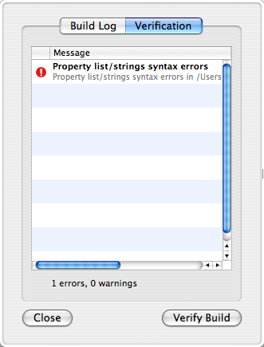

Verify Your Package, Metapackage, or Distribution
PackageMaker includes a verification tool for packages, metapackages, and distributions. After building your package, metapackage, or distribution, view the Build Log via the Project > View Build Log… menu item and press the “Verify Build” button.
The verification process will check your package for many common errors and problems. It is not guaranteed to catch everything, so you should still carefully test your packages. It checks the following things:
In Packages
- Property list and .strings syntax
- That permissions in the package match system directory permissions
In Metapackages
- Property list and .strings syntax
- That contained packages exist
- That contained packages do not have duplicate bundle identifiers
- That contained packages do not have missing bundle identifiers
- That a distribution is not contained within a metapackage.
In Distributions
- Property list and .strings syntax
- Distribution XML syntax
- Distribution JavaScript syntax
- That contained packages exist
- That contained packages do not have duplicate bundle identifiers
- That contained packages do not have missing bundle identifiers
- That the authorization level of contained packages matches that specified in the distribution XML